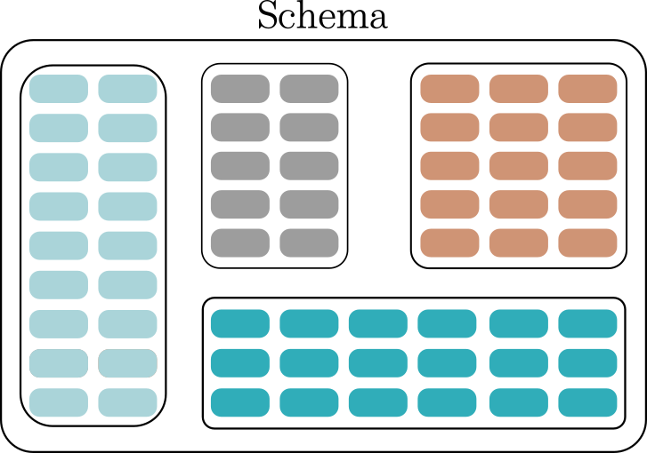
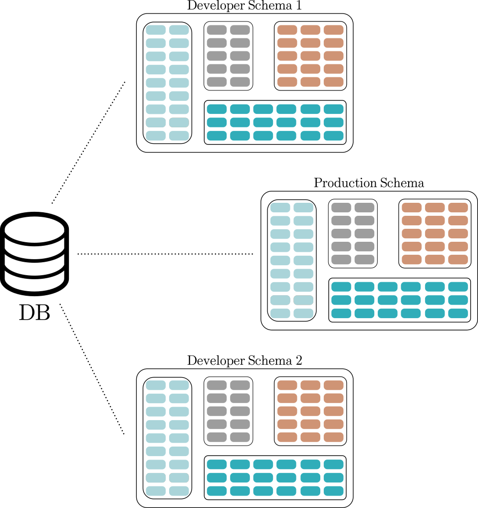

SQL#
En esta sección se explican brevemente algunos conceptos técnicos relacionados con las bases de datos relacionales y SQL.
RDBMS#
Un sistema de administración de bases relacionales o RDBMS por sus siglas en inglés es un tipo de sistema de administración de bases de datos SQL que organizan los datos en tablas con filas y columnas, que usan un esquema predefinido. Se asegura que los datos se almacenen, se recuperen y se administren en una estructura relacional, donde las relaciones entre las tablas se definen usando llaves (primarias y foráneas).
Características:
Está basado en un modelo de datos relacional.
Utilizan el lenguaje SQL.
Es la mejor opción cuando los datos están estructurados y cambian constantemente. Los datos deben de ser consistentes.
Algunos sistemas SQL son:
{kind=link}
A continuación se profundizará en algunos de los principales objetos de una RDBSM.
Schemas#
Es un namespace (contenedor lógico o estructura) que contiene, organiza y agrupa objetos de bases de datos con nombre, tales como tablas, views, indexes, data types, functions, stored procedures y operators.
{kind=link}
Se utilizan para proveer a varios usuarios la misma base de datos, también se utiliza para dividir en segmentos la base de datos.
Una base de datos puede contener uno o múltiples schemas y cada schema pertenece a una única base de datos. Dos schemas pueden tener diferentes objetos que comparten el mismo nombre.
{kind=link}
Los schemas son útiles para organizar los objetos de la base de datos en grupos lógicos para hacerlos más fácil de administrar.
Tablas#
Una tabla es una estructura que almacena información de manera organizada dentro de una base de datos. Las tablas representan una sola entidad y están constituidas por filas o registros que representan una sola observación de la entidad y columnas o campos que representan un solo atributo. Las tablas deben tener una columna o combinación de columnas que permitan identificar de manera única cada fila, dependiendo del tipo de normalización que tengan el conjunto de tablas. Además cada columna debe de tener un tipo de dato definido y opcionalmente pueden tener restricciones.
{kind=link}
Aparte de las tablas existen otras estructuras similares que pueden cumplir un papel similar, tales como las views, tablas temporables y materialized views, las cuales se explican a detalle cada una más adelante. Considerar las siguientes recomendaciones de cúando usar cada tipo de tabla.
Tabla: Almacenamiento base (ocupan memoria física).
Tabla temporal: Cuando se hacen queries con tablas grandes.
View: Lógica complicada o cálculo de campos.
Materialized view: Lógica complicada que merma el desempeño.
Keys#
Las keys idenfican de manera única cada registro en una tabla, a continuación se resumen los principales tipos de keys.
Key: Es un atributo o combinación de atributos que identifica a un registro de manera única.
Superkey: Es todo el conjunto de combinaciones de atributos que identifican de manera única a cada fila. Una tabla puede tener más de un atributo o combinaciones de atributos que identifican de manera única a cada fila. Para que una combinación de atributos sea considerada un super key, el conteo de los valores únicos de sus combinaciones debe de ser igual al número total de observaciones en la tabla.
Candidate key: Son los elementos del conjunto de superkeys que no tienen atributos redundantes, es decir, son las superkeys con el menor número posible de atributos y en caso de que sea una combinación de atributos, los atributos por sí solos no puedan identificar de manera única a cada fila, sino que solo la combinación tenga esa propiedad. También puede ser un solo atributo siempre y cuando pueda identificar de manera única a cada fila.
Primary key (PK): Es una columna o combinación de columnas que identifica de manera única a cada fila de una tabla, esta key será la que se fungirá como foreing key en otras tablas y permitirá hacer relaciones entre ellas. Tuvo que haber sido seleccionada de los candidate keys. Solo puede y debe haber una primary key por tabla. No puede tener valores perdidos.
Surrogate key: Es una llave sustituta artificial, sería como agregar una columna serial para identificar a cada fila, también podría ser la combinación de dos o más columnas en una sola columna.
Foreing key (FK): Hacen referencia a una fila en otra tabla o la misma tabla. Son columnas en tablas cuyos valores se encuentran en otra tabla como primary key, sus dominios deben de ser los mismos, cada valor en FK debe existir en PK o debe ser Null. Una tabla puede tener varias columnas FK. No son consideradas como tal keys.
Restricciones de integridad#
Las restricciones de integridad son reglas de una base de datos que aseguran que haya consistencias, validez y exactitud en los datos almacenados en la base de datos. Estas restricciones establecen condiciones que deben de ser válidas para los datos en la base de datos. Las restricciones son necesarias porque:
Ayudan a mantener consistencia en las tablas y por lo tanto calidad a los datos.
Dan estructura a los datos.
Evitan la entrada de datos incorrectos o inconsistentes.
A continuación se revisan las principales restricciones de integridad.
Integridad del dominio#
También denominada restricciones de atributos, son restricciones con respecto al tipo de dato de cada columna y se aseguran que los datos ingresados a una columna satisfagan el tipo de dato, formato o rango de la misma. Establecen el tipo de operaciones y funciones que se pueden realizar con ellas y optimizan el almacenamiento.
Integridad de la entidad#
También denominada restricciones de llaves, son restricciones que se aseguran que cada registro de una tabla se pueda identificar de manera única, comúnmente forzando una llave primaria.
Integridad referencial#
Se asegura que haya consistencia entre las relaciones de la tablas al forzar restricciones de las llaves foráneas. Un registro haciendo referencia a otra tabla, debe de hacer referencia a un registro existente en esa otra tabla. El referential integrity puede ser violado de una tabla B a una tabla A de dos maneras:
Si se elimina un registro que se utiliza como PK en la tabla A y existe una FK en la tabla B que hace referencia a ese registro.
Si se inserta un registro FK en la tabla B que hace referencia a un PK en la tabla A que no existe.
Restricciones de columnas#
Las restricciones de columnas se utilizan para especificar reglas para las columnas en una tabla en una base de datos y forman parte de la definición de los schema. Ayudan a la consistencia y calidad de los datos. A continuación se exploran algunas restricciones comunes.
NOT-NULL#
Es una restricción que se pone a las columnas para indicar que la columna no puede contener valores NULL, si se añade esa restricción a una columna que ya existe, entonces es necesario que no tenga ningún NULL. Ningún valor futuro de la columna podrá ser NULL.
UNIQUE#
La restricción de únicos es una restricción para no permite que haya duplicados en una columna, a excepción de los valores NULL. Si se quiere añadir esta restricción a la columna de una tabla que ya existe es necesario que esa columna no tenga ningún valor repetido. Ningún valor futuro podrá repetirse en la misma columna.
PRIMARY KEY#
Es una restricción que se aplica a una columna o un conjunto de columnas que identifican de manera única a cada fila de una tabla. Es una combinación de las restricciones NOT-NULL y UNIQUE. Solo puede haber una primary key (simple o múltiple) por tabla.
FOREING KEY#
Es una restricción que se aplica a una columna e indica que los valores de esa columna hacen referencia a una fila en otra tabla o en la misma tabla. Son columnas en tablas cuyos valores se encuentran en otra tabla como primary key, sus dominios deben de ser los mismos, cada valor en FK debe existen en PK o debe ser NULL. Una tabla puede tener varias columnas FK.
CHECK#
Es una restricción que sirve para asegurarse que los valores de una columna cumplan una determinada condición boolena. Utiliza una expresión booleana para evaluar los valores antes de que sean insertados en una columna de una tabla. Si la condición se viola se arrojará un error y no se permitirá el ingreso del valor en la columna.
Otras Opciones de Columnas#
DEFAULT#
Establece un valor por default en una columna si ningún valor se define.
CREATE INDEX#
Usado para crear y recuperar datos de una base de datos de manera sencilla.
SERIAL#
Es un pseudo tipo de dato, que se utiliza para definir auto incrementos en las columnas, para ello se crea un objeto SEQUENCE que genera una secuencia de número enteros. Existen tres tipos de datos SERIAL:
SMALLSERIAL: 1 a 32,767.SERIAL: 1 a 2,147,483,647BIGSERIAL: 1 a 9,223,372,036,854,775,807.
Caution
Al insertar valores a una tabla, las columnas que se hayan declarado como SERIAL se deben de omitir o utilizar la palabra DEFAULT.
Para obtener el nombre de la secuencia de una coluna tipo SERIAL, se utiliza:
-- Recuperar nombre de una columna SERIAL
pg_get_serial_sequence('table_name','col_name')
Para conocer el valor más reciente generado por una secuencia se utiliza:
-- Recuperar última valor de una secuencia.
SELECT currval(pg_get_serial_sequence('table_name','col_name'));
IDENTITY COLUMN#
Es una restricción, que se utiliza para definir auto incrementos en las columnas, para ello se crea un objeto SEQUENCE subyacente que genera una secuencia de número enteros.
En caso de que una columna haya sido definida con GENERATED ALWAYS AS IDENTITY para poder insertar o actualizar datos es necesario usar (ejemplo INSERT):
-- Insertar o actualizar identity column
INSERT INTO table (col_id, col2)
OVERRIDING SYSTEM VALUE
VALUES(val1, val2);
col_id es la columna
IDENTITY COLUMN.Si no se hubiera puesto
OVERRIDING SYSTEM VALUEse hubiera generado un error, porque no es posible insertar valores a una columna conGENERATED ALWAYS AS IDENTITY.
Como GENERATED AS IDENTITY utiliza un objeto SEQUENCE, es posible especificar las características de la secuencia, para ello solo poner entre paréntesis las características después de definir la columna (ejemplo con START WITH e INCREMENT BY):
-- Especificar secuencia en un identity column
CREATE TABLE table (
col1_id type GENERATED BY DEFAULT AS IDENTITY
(START WITH N1 INCREMENT BY N2),
col2 type,
...
);
Todas las opciones son:
[ AS { SMALLINT | INT | BIGINT } ]
[ INCREMENT [ BY ] increment ]
[ MINVALUE minvalue | NO MINVALUE ]
[ MAXVALUE maxvalue | NO MAXVALUE ]
[ START [ WITH ] start ]
[ CACHE cache ]
[ [ NO ] CYCLE ]
[ OWNED BY { table_name.column_name | NONE } ]
Tablas temporales#
Son tablas que pueden ser vistas solo por el usuario que las creó y están disponibles hasta que se termine la sesión. Una vez que la sesión se termine la tabla es eliminada automáticamente. Algunas características de estas tablas son:
Usadas para manipulación en el corto plazo o para procedimientos intermedios.
Son específicas de una sesión y no son visibles para otro usuarios aparte del que la creó.
Pueden mejorar el desempeño al reducir la necesidad de consultas complejas.
Views#
Las views o tabas virtuales son tablas cuyo contenido está definido por una consulta SELECT, básicamente son el result set de un query y los usuarios pueden hacer uso de esta tabla virtual de la misma manera como lo harían con cualquier otra tabla.
Constan de un conjunto de columnas y filas de datos con un nombre. No existe como conjunto de valores de datos almacenados en una base de datos (no ocupan memoria física). Las filas y las columnas de datos proceden de tablas a las que se hace referencia en la consulta que define la view y se producen de forma dinámica cuando se hace referencia a la view. Si se actualizan los datos en las tablas en las que está basada la view, también se actualizarán los datos de la view.
Beneficios:
No ocupan memoria física.
Es una forma de control de acceso, al permitir esconder columnas y restringir lo que los usuarios pueden ver.
Reducen la complejidad de queries, al poder reutilizar código.
Las tablas virtuales pueden tener las siguientes características:
Aggregation: Pueden incluir funciones para hacer aggregates como
SUM(),AVG(),COUNT(),MIN(),MAX(),GROUP BY, etc.Joins: Pueden incluir joins de tablas tales como
INNER JOIN,LEFT JOIN,RIGHT JOIN,FULL JOIN, etc.Condicionales: Pueden contener condicionales tales como
WHERE,HAVING,UNIQUE,NOT NULL,AND,OR, operadores de comparación, etc.
Materialized views#
Son tablas virtuales que se han materializado, es decir, que se crearán como una tabla nueva y se almacenarán en memoria. Son útiles en caso de que la view no se actualice seguido, por ejemplo, en OLAP. Algunas características son:
Almacenan los resultados del query, no el query.
Consultar una tabla virtual materializada implica acceder a los resultados almacenados del query, no a ejecutar el query.
Las tablas virtuales materializadas se deben de refrescar cada cierto tiempo.
¿Cuándo usar tablas virtuales materializadas?
Queries que tardan mucho en ejecutarse.
Los resultados del query no cambian constantemente.
Con Data warehouses.
Stored procedures#
Los procedimientos o stored procedure son una colección de consultas de SQL precompiladas que pueden ser almacenadas y reutilizadas posteriormente. Aceptan parámetros de entrada, ejecutan acciones y devuelven un estatus de éxito y parámetros de salida. No estrictamente tienen que regresar un valor, pero si lo hacen puede ser de cualquier tipo, excepto tablas. Son útiles para tareas repetitivas. Se almacenan en la base de datos para poder ser reutilizados.
Database roles#
Los roles son un recurso de SQL para administrar permisos de acceso. Un rol es una entidad que contiene la siguiente información:
Define los privilegios del rol (sentencias).
Interacción con el sistema de autentificación del cliente (contraseña).
Los roles se pueden asignar a uno o más usuarios. Los roles son globales a través de toda la base de datos.
Cuando se crea una base de datos nueva, automáticamente se crea un user llamado postgres, él es el administrador del database y tiene los siguientes privilegios:
Crear databases.
Eliminar databases.
Insertar nuevos registros.
Eliminar registros.
Crear tablas.
Eliminar tablas.
Entre muchos otros.
Se pueden crear users-roles adicionales que puedan: Agregar registros, hacer queries, editar registros, etc.
Beneficios y desventajas:
Beneficios:
Los roles se quedan definidos aún después de eliminar usuarios.
Los roles pueden ser definidos antes que las cuentas de los usuarios.
Ahorra tiempo de DBAs
Desventajas:
En ocasiones un rol puede otorgar demasiados privilegios a un usuario en particular. Es recomendable tener cuidado al asignar los roles a los usuarios.
Grupos#
Es un tipo de rol, en esencia los roles pueden funcionar como un rol de usuario o como grupo de roles de usuarios.
Particiones#
Las particiones son una posible solución a tablas que se vuelven muy grandes y pesadas, estas tablas pueden provocar que los queries se vuelvan más lentos, así también como las actualizaciones. Las particiones permiten dividir la tabla en partes más pequeñas (particiones). Las particiones pertenecen a la parte física del modelo de datos.
Verticalmente#
En una partición verticial se separan las tablas en otras que contendrán diferentes columnas, aun cuando el modelo ya esté normalizado. Las nuevas tablas deben de tener la misma columna de ids para poder unirlas mediante JOINs.
Horizontalmente#
En una partición horizontal se divide la tabla de manera horizontal, de manera que las nuevas tablas contendrán diferentes filas. Se debe de mantener el formato de las tablas para poder unirlas mediante UNION.
Cuando se realiza una partición horizontal y se distribuye en diferentes computadoras se llama sharding.
Índices#
Es un método de crear keys ordenadas para columnas para mejorar la velocidad en la búsqueda de datos. En las columnas que normalmente se usa son aquellas que servirían como filtro o las primary keys. Se recomienda usar en tablas muy grandes. No se recomienda usar en tablas que se actualizan frecuentemente ni en columnas con muchos NULLs.
Index:
Crear índices en columnas de tipo Integer.
El orden de las columnas importa.
La columna debe de ser
NOT NULL.Solo crear cuando sea necesario.
Comandos de SQL#
Los comandos de SQL son instrucciones, se usan para comunicarse con la base de datos y para realizar acciones específicas, funciones y queries. Existen cinco principales tipos de comandos en SQL:
Data Definition Language (DDL): Son las sentencias relacionados con crear, alterar o eliminar información, están asociados a todo el database o al sever. Estos comandos son ‘auto-committed’, lo que significan que los cambios se guardan permanentemente. Las principales sentencias son
CREATE,ALTER,DROPyTRUNCATE.Data Manipulation Language (DML): Son las sentencias para manipular la información de las tablas, son responsables de todas las modificaciones en la base de datos. Estos comandos son ‘not auto-committed’, lo que significan que los cambios son reversibles. Las principales sentencias son
INSERT,UPDATEyDELETE.Data Control Language (DCL): Son las sentencias relacionados con otorgar o quitar privilegios a los usuarios para manipular las bases de datos. Las principales sentencias son
GRANTyREVOKE.Transaction Control Language (TCL): Son las sentencias que solo se pueden usar con comandos DML, se realizan automáticamente. Las principales sentencias son
COMMIT,ROLLBACKySAVEPOINT.Data Query Language (DQL): Son las sentencias para obtener datos de la base de datos. La unica sentencia es
SELECT.
Queries#
Un query es una solicitud de información en una base de datos. Los queries están constituidos por sentencias y clausulas, que son palabras especiales que realizan determinada acción.
Sentencias: Representan un instrucción completa que es enviada a un servidor de una base de datos para realizar una operación específica. la principal sentencia es
SELECT(DQL).Clasulas: Son componentes de una sentencia de SQL que provee de instrucciones o condiciones adicionales a la operación que se realizará. Algunas de las clausulas que destacan son
FROM,WHERE,GROUP BY,JOIN, etc.
SQL no es sensible a mayúsculas y minúsculas, pero se recomienda poner los statements, clausulas, funciones y cualquier otro tipo de keyword en mayúsculas.
Orden al escribir queries#
Al escribir queries en PostgreSQL se debe respetar el siguiente orden:
SELECTFROMJOIN
WHEREGROUP BYHAVING
ORDER BYLIMIT
Orden de ejecución de un query#
El orden con el que se ejecutan las sentencias en un query de consulta es:
FROMJOIN
WHEREGROUP BYHAVING
Aggregate functions (
SUM,COUNT,AVG, etc.)SELECTDISTINCTORDER BYLIMIT
Mejores prácticas al escribir queries#
Finalizar el query con punto y coma (
;).Utiliza alias (
AS) siempre.Especificar explícitamente el tipo de JOIN (solo usar
JOINes lo mismo que usarINNER JOIN, pero se recomienda explícitamente decir qué tipo de JOIN es).Los alias de las tablas en JOIN se recomienda que sean la primer letra o una corta abreviación del nombre de la palabra.
Usar comentarios para decir qué hace el query y aspectos importantes. Ya sean simples (
--) o de múltiples líneas (/* texto */).Poner en mayúsculas los comandos de SQL, ejemplo,
SELECT,FROM,WHERE, etc.Procurar no poner todo en una solo línea, como los
JOINyONo las columnas enSELECT.Identar las líneas, por ejemplo, múltiples columnas en
SELECT.Se recomienda usar snake_case, esto es, para nombres largos usar ‘_’ como separador de palabra. Ejemplo, “esto_es_un_ejemplo”, en lugar de “estoesunejemplo” o “EstoEsUnEjemplo” (no usar CamelCase).
Usar
INoANY(ARRAY(...))en lugar deORanidados yBETWEENen lugar de dosAND.No abusar de los comentarios.
De preferencia no usar
*enSELECT. Limitar los resultados.No usar SQL como un lenguaje de programación, no lo es.